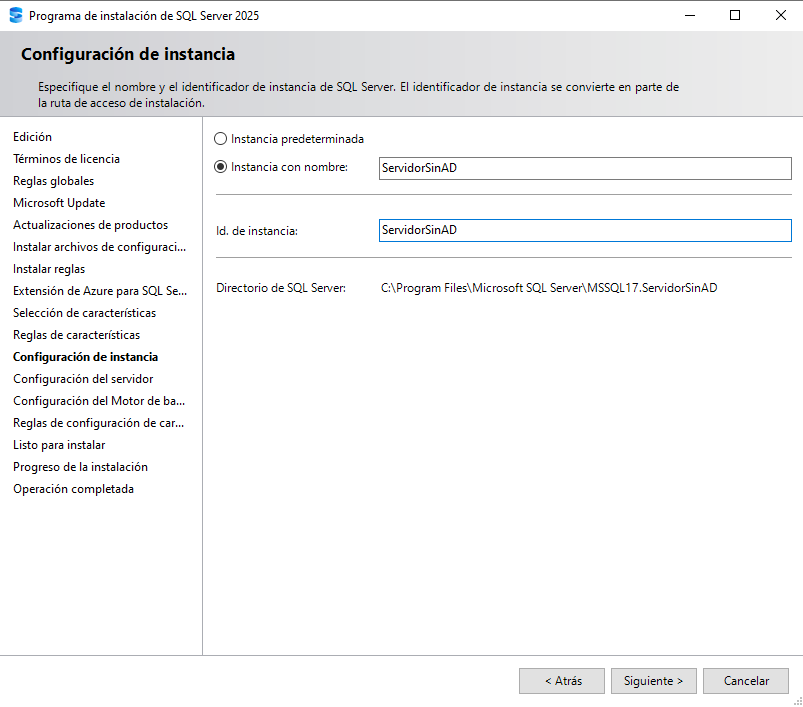
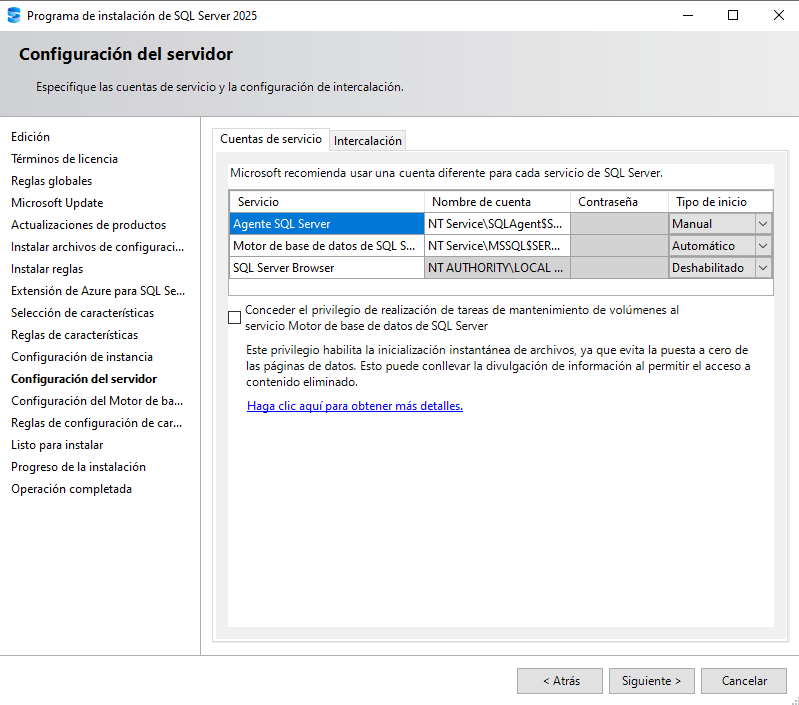
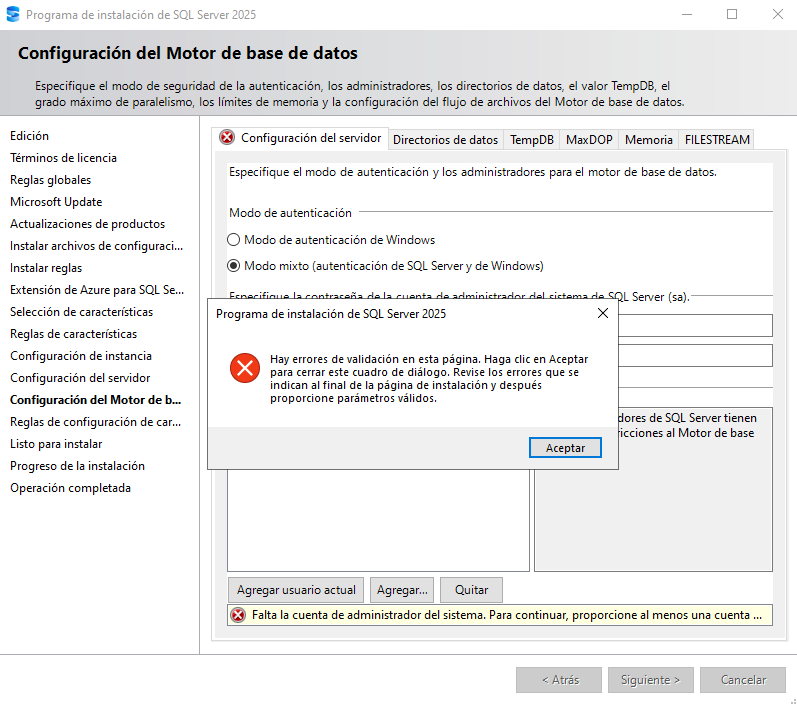
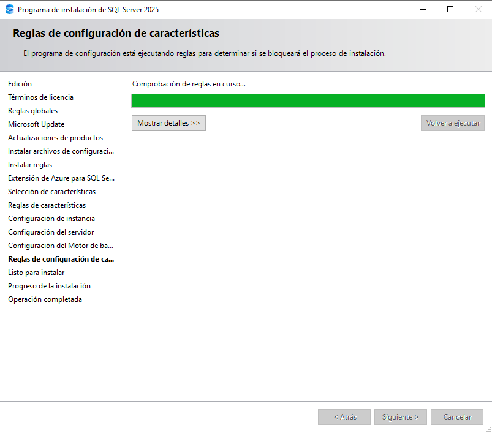

SQL Server / Instalación
Configuración de instancia y del motor
Estado del capítulo: la documentación de esta instalación llega hasta la pantalla Listo para instalar. Las capturas no muestran el inicio ni la finalización de la instalación, así que no se afirma que el motor esté instalado ni verificado.
13. Seleccionar el motor de base de datos

En esta pantalla queda seleccionado únicamente Servicios de Motor de base de datos. Las características opcionales permanecen sin marcar; conserva las rutas propuestas salvo que tengas un motivo para cambiarlas.
14. Configurar la instancia
15. Revisar las cuentas de servicio
16. Añadir una cuenta administradora de SQL Server
El asistente exige al menos una cuenta administradora del motor para continuar. En esta configuración se añadió la cuenta local actual. Si se elige el modo mixto, establece una contraseña segura para la cuenta sa y confírmala en el propio instalador. La documentación no almacena esa contraseña.
17. Revisar la configuración del motor
18. Esperar la comprobación de reglas
19. Revisar el resumen antes de instalar

Selecciona Instancia con nombre y comprueba que el nombre y el identificador muestran ServidorSinAD. La pantalla propone una ruta de instalación asociada a MSSQL17.ServidorSinAD.

La captura muestra Agente SQL Server en inicio Manual, Motor de base de datos en Automático y SQL Server Browser Deshabilitado. Los nombres de cuenta aparecen truncados en la interfaz. La opción de conceder el privilegio de mantenimiento de volúmenes está desmarcada; no la cambies salvo que haya una necesidad concreta.

El asistente no permite continuar porque todavía no hay ninguna cuenta indicada como administradora de SQL Server. Cierra el aviso y añade al menos una cuenta en la configuración del motor.

La captura muestra el modo mixto y una cuenta añadida a la lista de administradores de SQL Server. La identidad local se ha ocultado en la imagen publicada y los campos de contraseña permanecen enmascarados. Usa la contraseña que hayas elegido en el equipo; no la compartas ni la incluyas en documentación.

Espera a que el asistente termine la comprobación de reglas y revisa el resultado antes de continuar. Esta captura solo acredita que la comprobación estaba en curso, no cuál fue su resultado final.

El resumen muestra la edición Desarrollador empresarial, la acción Instalar, Servicios de Motor de base de datos y la instancia SERVIDORSINAD. Antes de pulsar Instalar, revisa el resumen completo y confirma que coincide con la configuración que quieres.
Cierre de la documentación
El procedimiento queda documentado hasta el resumen Listo para instalar. Para documentar también una instalación completada haría falta una captura posterior a pulsar Instalar y una comprobación del motor iniciado; esas acciones no aparecen en este conjunto de capturas.